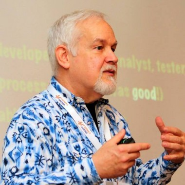

9:30 - 10:00
Agenda
10:00 - 10:15
Welcome Keynote
Cian ÓMaidin, CEO @ NearForm

Founder and CEO at nearForm, Europe’s leading Node.js consulting compay nearForm focus on server side projects in Node.js optimising for large-scale Mobile and Hardware applications. Founded in 2012, nearForm have developed and deployed over 30 large scale systems in Node. Cian is a peer-to-peer and data-synchronisation enthusiast, and as a result nearForm have pushed the state-of-the-art in the Node eco-system. Cian is Curator of NodeConf.eu, creator of PeerConf and runs Dublin’s monthly Node meet-up.

10:15 - 10:45
Microservices at Gilt Groupe
Sean Smith, Principal Software Engineer @ Gilt Groupe

Sean Smith is a Software Engineer from Canada. He currently works at Gilt Groupe as a Principal Software Engineer. He has worked on a variety of services at Gilt, ranging from third party warehouse systems integration to email content generation and delivery.

10:45 - 11:00
Coffee
11:00 - 11:30
Microservices at Netflix
Diptanu Choudhury, Senior Software Engineer @ Netflix
Diptanu is a Senior Platform Engineer at Netflix. He works on core infrastructure like distributed scheduling, IPC libraries, service discovery, distributed tracing that powers various services at Netflix. His main areas of expertise are Ware House Scale Computing, linux containers, highly available systems, distributed persistence.

11:30 - 11:45
Coffee
11:45 - 12:15
Microservices at Hailo
Boyan Dimitrov, Platform Automation Lead @ Hailo
Boyan is a passionate technologist who helps businesses build next generation cloud architectures. By focusing on technology innovation and lightweight processes he helps development teams and organisations improve their velocity and streamline their development workflows. He is heavily vested in building scalable self-healing services and applications and has a profound interest in distributed systems. Boyan holds a bachelors degree in Network Technology from New Bulgarian University and a masters degree in IT Project Management from Aston University. For the past two years as the Platform Automation Lead at Hailo, Boyan has been working on a micro services ecosystem based on Go. The main goal of this architecture is to improve the execution time for teams and individuals and remove cross-team dependencies. This resulted in shortening the software release cycle from weeks to hours and even minutes and constantly adding value to the business.
12:15 - 1:00
Panel: So What Are Microservices?
Fred George, Principal Consultant @ Fred George Consulting
Fred George is an industry consultant, and has been writing code for over 46 years in (by his count) over 70 languages. He has delivered projects and products across his career, and in the last decade alone, has worked in the US, India, China, and the UK. He started ThoughtWorks University in Bangalore, India, based on a commercial programming training program he developed in the 90’s. An early adopter of OO and Agile, Fred continues to impact the industry with his leadingedge ideas, most recently advocating MicroService. Architectures and flat team structures (under the moniker of Programmer Anarchy). Oh, and he still writes code!
Sean Smith, Principal Software Engineer @ Gilt Groupe
Sean Smith is a Software Engineer from Canada. He currently works at Gilt Groupe as a Principal Software Engineer. He has worked on a variety of services at Gilt, ranging from third party warehouse systems integration to email content generation and delivery.
Diptanu Choudhury, Senior Software Engineer @ Netflix
Diptanu is a Senior Platform Engineer at Netflix. He works on core infrastructure like distributed scheduling, IPC libraries, service discovery, distributed tracing that powers various services at Netflix. His main areas of expertise are Ware House Scale Computing, linux containers, highly available systems, distributed persistence.
1:00 - 2:00
Lunch
2:00 - 2:30
Measuring Microservices
Richard Rodger, CTO @ nearForm
Richard Rodger is co-founder and chief technical officer (CTO) of nearForm, a Node.js consultancy that builds large-scale enterprise systems. He is an internationally recognized thought leader and speaker on Node.js and microservices. He is also author of Mobile Application Development in the Cloud (Wiley, 2012), and former CTO of FeedHenry, a mobile applications platform that was recently acquired by RedHat. Richard is creator of a number of open source tools, including Senecajs.org and Nodezoo.com. Richard is a regular contributor to the Sunday Business Post newspaper in Ireland, and holds degrees in Mathematics and Philosophy, and Computer Science.

2:30 - 2:45
Coffee + Dessert
2:45 - 3:30
Panel: The Business Implications of Microservices
Satty Bhens, Co-founder of McKinsey Digital Labs @ McKinsey Digital Labs
Satty is global practice leader and co-founder of McKinsey's Digital Labs. He has extensive experience in digital transformations, defining and implementing modern technology platforms, radically re-designing technology functions and creating innovations labs in major cities across the globe. Satty has recently served clients in Retail, Transportation and Travel, Healthcare and Banking deploying cutting edge technology practices including agile, mobile, big data, devops and UX design. A geek at heart, Satty regularly teaches software development best practices. In 2010 he was selected by US Aid to teach programming in Rwanda, building local IT capabilities that enabled the design and agile development of a new health system using open source platforms.
Pascal Laenen, Head of Digital Lab @ Thomas Cook
Pascal heads TC Digital Labs at Thomas Cook Group, one of the world’s biggest leisure companies with 22 thousand employees serving more than 22 million customers per year. In his role, Pascal works on bringing innovative ideas to life with the prime focus on improving customer’s satisfaction and experience of digital personalisation. He has a strong interest in tech trends and developments in omni-channel space, micro-services, graph databases, real-time data processing, software containers, to name but a few.
Amit Maimon, Head of Product Innovation @ ADP Innovation Labs
Amit is an entrepreneur, technologist and strategist focused on growth-innovation. In recent years Amit founded and sold several startup companies (Socrative, Lynxminer), defined business and technology strategies for Fortune 500s (as part of his work at McKinsey and Company) and most recently is leading ADP product innovation initiatives out of ADP’s Chelsea Innovation Lab. Amit completed an MBA from MIT Sloan School of Management and while at MIT served as an advisor for MIT’s online education efforts which resulted in the recent launch of EDx – MIT’s next generation of online learning offerings & partnerships. Alongside his studies at MIT, Amit founded Socrative – a startup providing mobile-based assessment products for K12 schools that now serves over 10 million students across the US and the world.
Travell Perkins, VP of Web Architecture @ Fidelity Investments
Travell is VP of Web Architecture at Fidelity Investments and a leading evangelist for the widespread adoption of Node.js within the organization. He delivered Fidsafe, a virtual safe deposit box to market for the organization and is now applying Node and other JavaScript technologies to more core offerings. Travell has over ten years of experience building systems for financial services. He holds a B.S. in Computer Science from MIT and an M.S. in Business from BU. For fun Travell enjoys distance longboarding along the scenic flats of New England.

3:30 - 3:45
Coffee
3:45 - 4:15
Monolith to Microservices
Jason Melo, Chief Architect @ ADP Innovation Lab
Jason is Chief Architect at the ADP Innovation Lab in NYC. A cross-domain technologist & entrepreneur having founded companies in E-Commerce, CRM & Fintech, currently delivering next generation HCM platform solutions @ ADP. Jason’s development & architectural expertise focuses on composable systems, distributed platforms, true enterprise scale computing & mentorship.
4:15 - 4:30
Coffee
4:30 - 5:00
Go Faster - Impact on technology, process and organisation
Fred George, Principal Consultant @ Fred George Consulting
Fred George is an industry consultant, and has been writing code for over 46 years in (by his count) over 70 languages. He has delivered projects and products across his career, and in the last decade alone, has worked in the US, India, China, and the UK. He started ThoughtWorks University in Bangalore, India, based on a commercial programming training program he developed in the 90’s. An early adopter of OO and Agile, Fred continues to impact the industry with his leadingedge ideas, most recently advocating MicroService. Architectures and flat team structures (under the moniker of Programmer Anarchy). Oh, and he still writes code!
5:00 - 5:30
Final Thoughts
Satty Bhens, Co-founder of McKinsey Digital Labs @ McKinsey Digital Labs
Satty is global practice leader and co-founder of McKinsey's Digital Labs. He has extensive experience in digital transformations, defining and implementing modern technology platforms, radically re-designing technology functions and creating innovations labs in major cities across the globe. Satty has recently served clients in Retail, Transportation and Travel, Healthcare and Banking deploying cutting edge technology practices including agile, mobile, big data, devops and UX design. A geek at heart, Satty regularly teaches software development best practices. In 2010 he was selected by US Aid to teach programming in Rwanda, building local IT capabilities that enabled the design and agile development of a new health system using open source platforms.
5:30 - 7:30